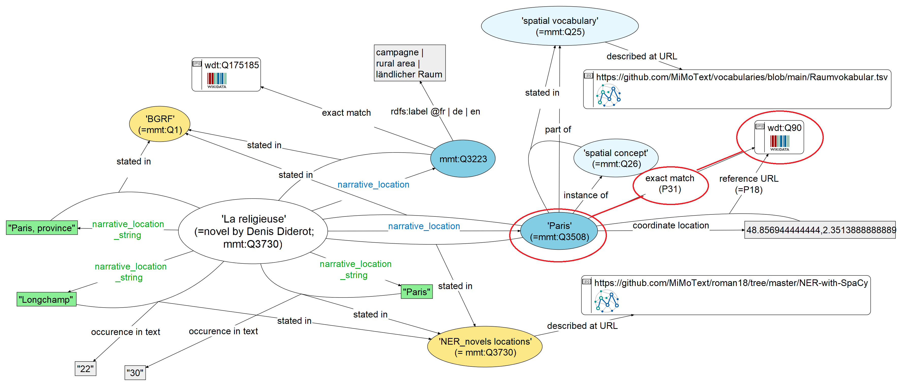
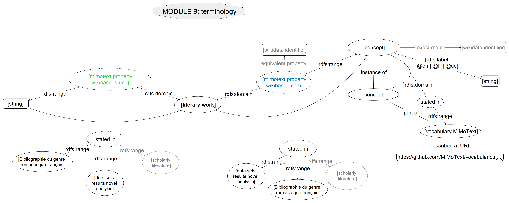
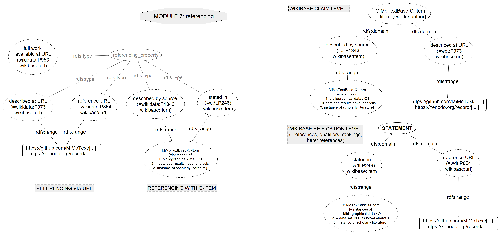
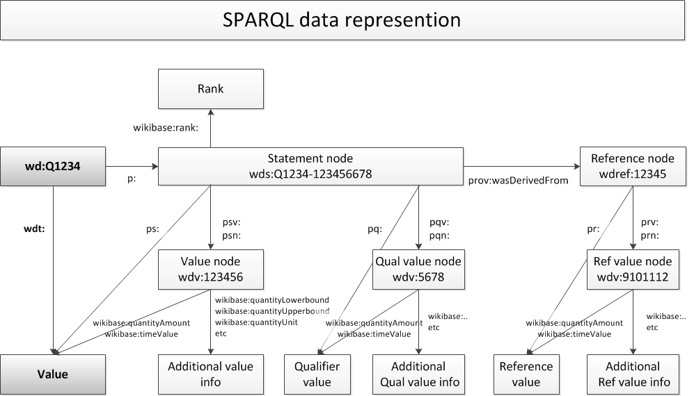

### Numérique, multilingue, collaborative et ouverte : nouvelles perspectives pour l'histoire littéraire / Digital, mehrsprachig, kollaborativ und offen: Neue Perspektiven für die Literaturgeschichte <img height="60" style="box-shadow:none;" data-src="img/basics/mimotext-logo.png"> <p style="font-size:28px;">Christof Schöch</p> <p style="line-height: 1.1; font-size:24px;">mit Maria Hinzmann, Matthias Bremm, Tinghui Duan, Anne Klee<br> Johanna Konstanciak und Julia Röttgermann</p> <p style="line-height: 1.1; font-size:24px;"><a href="https://mimotext.uni-trier.de">https://mimotext.uni-trier.de</a></p> <P style="line-height: 1.1; font-size:24px;">Les Jeudis de l'Institut historique allemand. <br>Paris, 7 mars 2024</P> :: - Hallo und willkommen zu unserem Vortrag - Wir sind sehr froh, hier zu sein. - Mein Thema ist die Verwendung von Linked Open Data beim Aufbau einer literaturhistorischen Ressource zur französischen Literaturgeschichte. - Wir möchten unsere Erfahrungen zu diesem Thema im Rahmen des Projekts "Mining and Modeling Text" teilen. - Maria Hinzmann und ich sind die Hauptkoordinatoren von "Mining and Modeling Text", das am Trier Center for Digital Humanities durchgeführt wird. - Die Finanzierung dieses 4-Jahres-Projekts, das Ende des Jahres ausläuft, kommt vom Land Rheinland-Pfalz, in dem Trier liegt. -- ## Gliederung 1. [Einführung: MiMoText](#/2) 2. [Mining: Datenerhebung](#/3) 3. [Modeling: Datenmodellierung](#/4) 4. [Ergebnis: Anwendungsbeispiele](#/5) 6. [Fazit](#/6) :: - Ich möchte zunächst einige Hintergrundinformationen über das Projekt zu geben. - Dann über die "Datenquellen" und die Erhebung von Infromationen aus ihnen sprechen - Dann werde ich etwas zum Datenmodell und der Verwendung von Ontologien im Projekt sagen - Und abschließend ein paar Perspektiven auf mögliche Fragen an den entstanden Datensatz anbieten -- ## (1) Einführung --- #### Ausgangspunkt - Verfügbarkeit von literaturhistorischem Wissen <!-- .element: class="fragment" data-fragment-index="1" --> - Sehr viel Wissen konnte akkumuliert werden - Aber es ist heterogen, unverbunden und... nicht maschinenlesbar - [Exkurs 1](#/2/2) - Das "Linked Open Data"-Paradigma gewinnt an Fahrt <!-- .element: class="fragment" data-fragment-index="2" --> - Hier wird Wissen in Form von einfachen Statements (Subjekt, Prädikat, Objekt) modelliert - Es kann dadurch 'semantisch' kodiert und vernetzt werden - [Exkurs 2](#/2/3) - Ziel des Vorhabens war, beides zusammenzubringen <!-- .element: class="fragment" data-fragment-index="3" --> - Literaturhistorisches Wissen mit LOD maschinenlesbar zu machen - Wissen aus heterogenen Quellen miteinander zu verbinden - Spezielle Wissensbestände mit vorhandenen Ressourcen zu verbinden - [Ergebnis](#/2/5) --- #### Exkurs (1): Literaturgeschichte - Ziele <!-- .element: class="fragment" data-fragment-index="1" --> - Sammeln und Dokumentieren literaturgeschichtlicher Fakten - Liefern von Erklärungen für die Entwicklung von Literatur - Organisationsprinzipien <!-- .element: class="fragment" data-fragment-index="2" --> - Nationen, Perioden, Bewegungen/Strömungen, Genres - Ähnlichkeiten und Unterschiede - Kontinuitäten und Wandel - Funktionen <!-- .element: class="fragment" data-fragment-index="3" --> - Erklärungen für literarische Entwicklungen - kultureller oder soziohistorischer Kontext - innere Dynamiken des literarischen Systems --- #### Exkurs (2a): Linked Open Data <img height="450" data-src="img/rdf11-primer-example-graph.jpg"> <br> <small> Quelle: <a href="https://www.w3.org/TR/rdf11-primer/">https://www.w3.org/TR/rdf11-primer/</a> </small> :: - Wie funktioniert überhaupt "Linked Open Data"? - Es gibt Subjekte, Prädikate und Objekte - Subjekte sind Entitäten wie Autoren oder Werke - Objekte sind weitere Entitäten, aber auch Themen, Orte, uvm. - Die Prädikate verbinden Subjekt und Objekt, wie ein Verb - So entstehen sehr einfache Aussagen - Erst bei einer großen Menge einfacher Aussagen entfaltet sich das Potential von LOD - Es entsteht ein Wissensgraph, der Teil des sogenannten "Semantic Web" wird --- ### Exkurs (2b): Tripel-Struktur in Wikidata <a href="img/candide_S-P-O.png"></img></a> --- #### MiMoText: Projektüberblick <img height="450" data-src="img/mimotext-overview.png"> <br> <small> <a href="https://mimotext.uni-trier.de">https://mimotext.uni-trier.de</a> </small> :: - Dieses Ziel, also literaturhistorisches Wissen zu sammeln, maschinenlesbar zu machen und zu vernetzen, anhand von LOD, das hat eben das Projekt MiMoText verfolgt - Wir nutzen hierfür drei unterschiedliche Informationsquellen - Bibliographische Metadaten; vor allem die "Bibliographie du genre romanesque francais, 1751-1800", von Martin, Mylne und Frautschi - Wissen aus der Literaturgeschichtsschreiung, vor allem Überblickskapitel aus Handbüchern - Und Eigenschaften von Primärtexten, in unserem Fall auf der Grundlage eines Korpus von 200 französischen Romanen der Zeit 1751-1800 - Arbeitsziele - Automatisches Extrahieren relevanter Informationen aus diesen Quellen - Diese Informationen als LOD modellieren und sie so weit wie möglich miteinander verknüpfen - Analyse dieser Informationen, um mehr über die Literatur der Epoche, aber auch über die Literaturgeschichtsschreibung zu erfahren. - Das bedeutet auch: Heterogene Quellen in einen homogenen Datensatz verwandeln - Das bedeutet auch, alles explizit zu modellieren, und hier kommen natürlich kontrollierte Vokabulare, Taxonomien, Ontologien und deren Implementierung und Verwendung ins Spiel. --- #### Literaturgeschichtliches Wissen als LOD - Spezifische Bausteine <!-- .element: class="fragment" data-fragment-index="1" --> - Subjekte, u.a. Personen (Autor:in, etc.) und Werke (Primärtext, Fachliteratur etc.) - Objekte, u.a Werke, aber auch Themen, Handlungsorte, Protagonisten, lit. Gattung etc. - Prädikate, je nach Bedarf, u.a.: has, is, sameAs etc. - Qualifikationen, u.a.: Quelle (mit Typ, Datum, URL) - Einige beispielhafte Aussage-Typen <!-- .element: class="fragment" data-fragment-index="2" --> - Bibliographisch: [person] has_created [work] - Inhaltlich: [work] about [thematic_concept] - Formal: [work] has_narrative_form [type] - uvm. --- #### Wikidata für die Literaturgeschichte - Idee: "Wikidata für die Literaturgeschichte" <!-- .element: class="fragment" data-fragment-index="1" --> - literaturgeschichtliches Informationssystem - Auf LOD-Basis mit explorativen Interface und SPARQL-Endpunkt - Ansatz einer "Atomisierung" des lit.hist. Wissens - Verknüpfung mit anderen Wissenssystemen (Taxonomien, Normdaten, Ontologien) - Im Vergleich zu Wikidata: <!-- .element: class="fragment" data-fragment-index="2" --> - fokussiert auf eine Domäne (Französischer Roman, 1750-1800) - bessere Abdeckung / höhere Aussagedichte für diese Domäne - Entwicklung einer systematischen Ontologie - viel kleiner: 300k vs. 1.5 Milliarden Aussagen -- ## (2) Mining: Datenerhebung --- ### Säule 1: Bibliographie du genre romanesque français <a href="img/bgrf-Candide.png"><img height="400" src="img/bgrf-Candide.png"></img></a> <p>Martin / Mylne / Frautschi: <em>Bibliographie<br/> du genre romanesque français, 1751-1800</em>, 1977</p> --- ### Säule 2: Primärliteratur (Romane) * Korpus von 200 französischen Romanen (1750-1800) * Kodierung: in XML-TEI, mit Metadaten, nach ELTeC-Schema * Analyseverfahren: Topic Modeling, Named Entity Recognition, Stilometrie u.a. <img height="300" src="img/roman18.jpg"></img> <br/> <small> <p>Collection of Eighteenth-Century French Novels (1750-1800), hg. Julia Röttgermann</p> </small> --- #### Säule 3: Forschungsliteratur <a href="img/inception_Candide-disambiguation.png"><img height="350" src="img/inception_Candide-disambiguation.png"></img></a> - Annotationsguidelines (basierend auf Datenmodell) - manuelle Annotationen (mit Hilfe des Tools INCEpTION) - Verknüpfung von INCEpTION mit MiMoTextBase und Wikidata -> Disambiguierung über IDs - Annotation von Aussagen über Werke (z.B. Themen) -- ## (3) Modeling: Datenmodellierung --- #### Ontologie - Überblick - Modul 1: Thema - Modul 2: Raum - Modul 3: Erzählform - Modul 4: Literarisches Werk - Modul 5: Autor - Modul 6: Mapping - Modul 7: Referenzierung - Modul 8: Versionierung & Publikation - Modul 9: Terminologie - Modul 10: Bibliographie - Modul 11: Fachliteratur (https://github.com/MiMoText/ontology) --- #### Beispiel: Die Teildomäne "Theme" <a href="img/module1_theme.png"></a> --- #### Meta-Aussagen <a href="img/mimotextbase_sources.png"><img height="450" data-src="img/mimotextbase_sources.png"></a> --- #### Verknüpfung mit Wikidata für ‘federated queries’ <a href="img/federated-queries_new.png"><img height="450" data-src="img/federated-queries_new.png"></a> -- ## (4) Ergebnis: Anwendungsbeispiele --- #### Ergebnis: die MiMoTextBase <a href="http://data.mimotext.uni-trier.de/wiki/Main_Page"><img height="450" src="img/mimotextbase.png"></img></a> - http://data.mimotext.uni-trier.de :: - Having all our data triples on French Enlightenment novels and authors stored in our Wikibase instance enables us to query it as a graph. - Start with some examples from the Wikibase "wiki view" - Author: not a lot of information, but: "exact_match" (!) => Wikidata - Title: a lot more information, both modeled and as strings, from various sources; meta-assertions / references - One can do searches here as well, but not in a very targeted manner => SPARQL --- #### SPARQL Endpunkt <a href="img/sparql_results1.png"><img height="350" src="img/sparql_results1.png"></img></a> - SPARQL = SPARQL Protocol and RDF Query Language - Verwendung zur Formulierung von Abfragen - https://query.mimotext.uni-trier.de :: - The DockerWikibaseQueryService interface provides numerous visualization options that allow exploration and analysis of data at different levels of granularity - Currently, we have almost 370.000 triples, so this already opens up many possiblities --- #### Einige Beispiel-Abfragen - Einfache Abfragen - [Liste der Romane mit Informationen der BGRF](https://query.mimotext.uni-trier.de/#%23%20Query%20to%20retrieve%20some%20data%20about%20the%20MiMoTextBase%20such%20as%20Authors%2C%20Novels%2C%20publicationyears%2C%20tonality%20etc.%0Aprefix%20wd%3A%3Chttp%3A%2F%2Fdata.mimotext.uni-trier.de%2Fentity%2F%3E%0Aprefix%20wdt%3A%3Chttp%3A%2F%2Fdata.mimotext.uni-trier.de%2Fprop%2Fdirect%2F%3E%20%0ASELECT%20DISTINCT%20%3Fbgrf%20%3Fitem%20%3Fauthorlabel%20%3FitemLabel%20%3Fyear%20%3Fnarrpers%20%3Ftonality%20%3Fpages%20%3Fnormalized%20WHERE%20%7B%0A%20%3Fitem%20wdt%3AP5%20%3Fauthor%3B%20%23%20who%20is%20the%20author%3F%0A%20%20%20%20%20%20%20wdt%3AP4%20%3Ftitle%3B%20%23%20what%20is%20the%20title%3F%0A%20%20%20%20%20%20%20wdt%3AP22%20%3Fbgrf%3B%20%20%23%20what%20is%20the%20identifier%20in%20the%20bibliographic%20metadata%3F%0A%20%20%20%20%20%20%20wdt%3AP9%20%3Fdate%3B%20%23%20what%20is%20the%20publication%20date%3F%0A%20OPTIONAL%20%7B%0A%20%20%20%3Fitem%20wdt%3AP27%20%3Fnarrpers%3B%20wdt%3AP31%20%3Ftonality%3B%20wdt%3AP25%20%3Fpages.%20%0A%20%7D%0A%20BIND%28YEAR%28%3Fdate%29%20as%20%3Fyear%29.%0A%20BIND%28if%28bound%28%3Fnarrpers%29%2C%20%3Fnarrpers%2C%20%22unbekannt%22%29%20as%20%3Fnormalized%29%0A%20%3Fauthor%20rdfs%3Alabel%20%3Fauthorlabel.%0A%20FILTER%28LANG%28%3Fauthorlabel%29%20%3D%20%22en%22%29%0A%20SERVICE%20wikibase%3Alabel%20%7B%20bd%3AserviceParam%20wikibase%3Alanguage%20%22%5BAUTO_LANGUAGE%5D%2C%20fr%22.%20%7D%0A%7D%20ORDER%20BY%20%3Fyear) - [Anzahl der Werke pro Autor:in (die ersten 25)](https://query.mimotext.uni-trier.de/#%23%20Get%20the%20count%20of%20written%20novels%20per%20authors%0APREFIX%20wd%3A%3Chttp%3A%2F%2Fdata.mimotext.uni-trier.de%2Fentity%2F%3E%0APREFIX%20wdt%3A%3Chttp%3A%2F%2Fdata.mimotext.uni-trier.de%2Fprop%2Fdirect%2F%3E%0A%0ASELECT%20%3FauthorName%20%28count%20%28%3FauthorName%29%20as%20%3Fcount%29%0AWHERE%20%7B%0A%20%20%20%3Fwork%20wdt%3AP5%20%3Fauthor%20.%20%23%20work%20has%20author.%0A%20%20%20%3Fauthor%20rdfs%3Alabel%20%3FauthorName%20.%20%23%20get%20author%20label%20%28not%20only%20Link%20to%20author%29%0A%20%20%20FILTER%28LANG%28%3FauthorName%29%20%3D%20%22en%22%29%20%23%20other%20options%3A%20%22fr%22%2C%20%22de%22.%20Filter%20is%20needed%20as%20there%20is%20more%20than%20one%20label%20%28language%20dependent%29%0A%7D%0A%0Agroup%20by%20%3FauthorName%0Aorder%20by%20desc%20%28%3Fcount%29%0ALIMIT%2025%0A%0A) - [Themen der Romane, auf Französisch](https://query.mimotext.uni-trier.de/index.html#%23defaultView%3ABubbleChart%0Aprefix%20wd%3A%3Chttp%3A%2F%2Fdata.mimotext.uni-trier.de%2Fentity%2F%3E%0Aprefix%20wdt%3A%3Chttp%3A%2F%2Fdata.mimotext.uni-trier.de%2Fprop%2Fdirect%2F%3E%20%0ASELECT%20%3FtopLabel%20%28count%28%2a%29%20as%20%3Fcount%29%0AWHERE%20%7B%0A%20%3Fitem%20wdt%3AP36%20%3Ftop%20.%0A%20%3Ftop%20rdfs%3Alabel%20%3FtopLabel%20.%0A%20filter%28lang%28%3FtopLabel%29%20%3D%20%22fr%22%29%0A%7D%0AGROUP%20BY%20%3FtopLabel%0AORDER%20BY%20desc%28%3Fcount%29) and in [English](https://query.mimotext.uni-trier.de/index.html#%23defaultView%3ABubbleChart%0Aprefix%20wd%3A%3Chttp%3A%2F%2Fdata.mimotext.uni-trier.de%2Fentity%2F%3E%0Aprefix%20wdt%3A%3Chttp%3A%2F%2Fdata.mimotext.uni-trier.de%2Fprop%2Fdirect%2F%3E%20%0ASELECT%20%3FtopLabel%20%28count%28%2a%29%20as%20%3Fcount%29%0AWHERE%20%7B%0A%20%3Fitem%20wdt%3AP36%20%3Ftop%20.%0A%20%3Ftop%20rdfs%3Alabel%20%3FtopLabel%20.%0A%20filter%28lang%28%3FtopLabel%29%20%3D%20%22en%22%29%0A%7D%0AGROUP%20BY%20%3FtopLabel%0AORDER%20BY%20desc%28%3Fcount%29) - Abfragen mit Visualisierung - [Anzahl der Romane pro Jahr](https://query.mimotext.uni-trier.de/#%23%20Query%20to%20retrieve%20the%20first%20publication%20dates%20of%20all%20French%20novels%201751-1800%0Aprefix%20wd%3A%3Chttp%3A%2F%2Fdata.mimotext.uni-trier.de%2Fentity%2F%3E%20%0Aprefix%20wdt%3A%3Chttp%3A%2F%2Fdata.mimotext.uni-trier.de%2Fprop%2Fdirect%2F%3E%20%0ASELECT%20%28str%28SAMPLE%28year%28%3Fdate%29%29%29%20as%20%3Fyear%29%20%28COUNT%28%2a%29%20AS%20%3Fcount%29%0AWHERE%20%7B%0A%20%20%20%3Fitem%20wdt%3AP9%20%3Fdate%20.%0A%7D%0AGROUP%20BY%20%3Fdate%0AORDER%20BY%20DESC%28%3Fdate%29) - [Autor:innen (nach Geburtsdatum, mit Portrait)](https://query.mimotext.uni-trier.de/#%23%20show%20authors%2C%20their%20Wikidata%20match%2C%20their%20birth%20dates%20in%20a%20timeline%20%0A%23defaultView%3ATimeline%0APREFIX%20wid%3A%20%3Chttp%3A%2F%2Fwww.wikidata.org%2Fentity%2F%3E%20%23wikidata%20prefix%20definition%20for%20entity%0APREFIX%20widt%3A%20%3Chttp%3A%2F%2Fwww.wikidata.org%2Fprop%2Fdirect%2F%3E%20%23wikidata%20prefix%20definition%20for%20property%0Aprefix%20wd%3A%3Chttp%3A%2F%2Fdata.mimotext.uni-trier.de%2Fentity%2F%3E%20%23mimotext%20prefix%20for%20entity%20is%20wd%0Aprefix%20wdt%3A%3Chttp%3A%2F%2Fdata.mimotext.uni-trier.de%2Fprop%2Fdirect%2F%3E%20%23mimotext%20prefix%20for%20property%20is%20wdt%0ASelect%20%3Fauthor%20%3FauthorLabel%20%3FwikiLink%20%3Fbirth%20%3Fimage%20%0A%7B%0A%20%20%3Fauthor%20wdt%3AP11%20%3Foccupation.%0A%20%20%3Fauthor%20wdt%3AP13%20%3FwikiLink.%0A%20%20%3Fauthor%20rdfs%3Alabel%20%3FauthorLabel%0A%20%20Filter%28lang%28%3FauthorLabel%29%20%3D%20%22en%22%29%0A%20%20%20%20%20%20%20%20%20%20%0A%20%20SERVICE%20%3Chttps%3A%2F%2Fquery.wikidata.org%2Fsparql%3E%20%7B%0A%20%20%20%20%3FwikiLink%20widt%3AP569%20%3Fbirth.%20%0A%20OPTIONAL%7B%20%20%20%3FwikiLink%20widt%3AP18%20%3Fimage.%7D%0A%0A%20%20%7D%0A%20%20%20%20%20%20%20%20%20%20%20%0A%7D%0A) - [Erzählform der Romane über die Zeit (Jahrzehnte)](https://query.mimotext.uni-trier.de/index.html#%23title%3AChange%20of%20narrative%20forms%20over%205-year%20periods%0A%23defaultView%3ABarChart%0APREFIX%20mmd%3A%3Chttp%3A%2F%2Fdata.mimotext.uni-trier.de%2Fentity%2F%3E%20%0APREFIX%20mmdt%3A%3Chttp%3A%2F%2Fdata.mimotext.uni-trier.de%2Fprop%2Fdirect%2F%3E%20%0APREFIX%20rdfs%3A%20%3Chttp%3A%2F%2Fwww.w3.org%2F2000%2F01%2Frdf-schema%23%3E%0A%0ASELECT%20%28str%28SAMPLE%28%3FperiodStart%29%29%20AS%20%3Fperiod%29%20%28COUNT%28%3FformLabel%29%20AS%20%3Fcount%29%20%3FformLabel%20%0AWHERE%20%7B%0A%20%20%20%20%3Fitem%20mmdt%3AP33%20%3Fform.%0A%20%20%20%20%3Fform%20rdfs%3Alabel%20%3FformLabel%20.%0A%20%20%20%20%3Fitem%20mmdt%3AP9%20%3Fdate%20.%0A%20%20%20%20FILTER%28lang%28%3FformLabel%29%20%3D%20%22en%22%29%0A%20%20%20FILTER%28YEAR%28%3Fdate%29%20%3C%201800%29%20%23%20filter%20for%20the%20publication%20date%20of%20interest%0A%20%20%20%20%0A%20%20%20%20%23%20Calculating%20the%205-year%20period%20start%20year%20without%20using%20MOD%0A%20%20%20%20BIND%28%28year%28%3Fdate%29%20-%20%28year%28%3Fdate%29%20-%20xsd%3Ainteger%28floor%28xsd%3Adecimal%28year%28%3Fdate%29%29%20%2F%2010%29%20%2a%2010%29%29%29%20AS%20%3FperiodStart%29%0A%20%20%20%20%0A%20%20%20%20SERVICE%20wikibase%3Alabel%20%7Bbd%3AserviceParam%20wikibase%3Alanguage%20%22fr%22.%7D%0A%7D%0AGROUP%20BY%20%3FperiodStart%20%3FformLabel%20%0AORDER%20BY%20%3FperiodStart%20%3FformLabel%20%0A) - [Buchgeschichte: Formate über die Zeit (je 5 Jahre)](https://query.mimotext.uni-trier.de/#%23defaultView%3ABarChart%0Aprefix%20wd%3A%3Chttp%3A%2F%2Fdata.mimotext.uni-trier.de%2Fentity%2F%3E%0Aprefix%20wdt%3A%3Chttp%3A%2F%2Fdata.mimotext.uni-trier.de%2Fprop%2Fdirect%2F%3E%20%0ASelect%20%20%28str%28SAMPLE%28%3FperiodStart%29%29%20AS%20%3Fperiod%29%20%28count%28%3Fformat%29%20as%20%3Fcount%29%20%3Fformat%20%0A%20%20%20WHERE%7B%0A%20%20%20%3Fitem%20wdt%3AP26%20%3Fformat.%0A%20%20%20%3Fitem%20wdt%3AP9%20%3Fdate%20.%0A%20%20FILTER%28lang%28%3Fformat%29%20%3D%20%22fr%22%29%0A%20%20FILTER%28YEAR%28%3Fdate%29%20%3C%201800%29%20%23%20filter%20for%20the%20publication%20date%20of%20interest%0A%23%20FILTER%28lcase%28%3Fformat%29%20%3D%20%2212-in%22%40fr%29%0A%20%20%20%20%20%20Filter%20%28regex%28lcase%28%3Fformat%29%2C%20%22in-%5C%5Cd%2B%5B%5C%5Cs%5C%5CS%5D%22%29%29%0A%0A%20%20%20%20%23%20Calculating%20the%205-year%20period%20start%20year%20without%20using%20MOD%0A%20%20%20%20BIND%28%28year%28%3Fdate%29%20-%20%28year%28%3Fdate%29%20-%20xsd%3Ainteger%28floor%28xsd%3Adecimal%28year%28%3Fdate%29%29%20%2F%205%29%20%2a%205%29%29%29%20AS%20%3FperiodStart%29%20%0A%20%20%20%20%23%20BIND%28str%28year%28%3Fdate%29%29%20as%20%3Fyear%29%0A%0A%20%20%20%20SERVICE%20wikibase%3Alabel%20%7Bbd%3AserviceParam%20wikibase%3Alanguage%20%22%7BAUTO_LANGUAGE%7D%22%2C%22fr%22%20.%7D%0A%20%20%7D%0A%0AGROUP%20BY%20%3Fformat%20%3FperiodStart%20%3Fcount%0Ahaving%20%28%3Fcount%3E%204%29%0A) - Federated queries - [Die Erzählorte aller Romane (Karte)](https://query.mimotext.uni-trier.de/#%23defaultView%3AMap%7B%22hide%22%3A%20%5B%22%3Fnar_loc%22%5D%2C%20%22markercluster%22%3A%22true%22%7D%0APREFIX%20wid%3A%20%3Chttp%3A%2F%2Fwww.wikidata.org%2Fentity%2F%3E%20%23wikidata%20wd%0APREFIX%20widt%3A%20%3Chttp%3A%2F%2Fwww.wikidata.org%2Fprop%2Fdirect%2F%3E%20%23wikidata%20wdt%0APREFIX%20wd%3A%3Chttp%3A%2F%2Fdata.mimotext.uni-trier.de%2Fentity%2F%3E%0APREFIX%20wdt%3A%3Chttp%3A%2F%2Fdata.mimotext.uni-trier.de%2Fprop%2Fdirect%2F%3E%20%0ASELECT%20DISTINCT%20%3Fitem%20%3FitemLabel%20%3Fnar_loc%20%3Fnar_locLabel%20%3FWikiDataEntity%20%3FcoordinateLocation%0AWHERE%20%7B%20%3Fitem%20wdt%3AP32%20%3Fnar_loc.%0A%20%20%3Fnar_loc%20wdt%3AP13%20%3FWikiDataEntity.%0A%20%20%23Federated%20Query%20-%3E%20Wikidata%0A%20%20SERVICE%20%3Chttps%3A%2F%2Fquery.wikidata.org%2Fsparql%3E%20%7B%0A%20%20%20%20%3FWikiDataEntity%20widt%3AP625%20%3FcoordinateLocation%0A%20%20%7D%20%20%20%20%20%20%20%20%20%20%20%0A%20%20SERVICE%20wikibase%3Alabel%20%7B%20bd%3AserviceParam%20wikibase%3Alanguage%20%22en%22%20.%20%7D%0A%7D%0A) - [Alternative Autornamen aus Wikidata-Infobox](https://query.mimotext.uni-trier.de/#%23title%3AAlternative%20Labels%20of%20author%20names%20via%20%E2%80%98federated%E2%80%99%20queries%E2%80%99%0APREFIX%20mmd%3A%3Chttp%3A%2F%2Fdata.mimotext.uni-trier.de%2Fentity%2F%3E%0APREFIX%20mmdt%3A%3Chttp%3A%2F%2Fdata.mimotext.uni-trier.de%2Fprop%2Fdirect%2F%3E%0A%0ASELECT%20DISTINCT%20%3Fauthor%20%3FauthorLabel%20%3FwikidataEntity%20%3Faltname%0AWHERE%20%7B%0A%09%20%3Fitem%20mmdt%3AP5%20%3Fauthor.%0A%20%20%20%20%20%20%3Fauthor%20mmdt%3AP13%20%3FwikidataEntity.%20%20%23exact%20match%0A%20%0A%20%20%20%20%20%20%23Federated%20Query%20-%3E%20Wikidata%0ASERVICE%20%3Chttps%3A%2F%2Fquery.wikidata.org%2Fsparql%3E%20%7B%0A%20%20%20%09%20%3FwikidataEntity%20skos%3AaltLabel%20%3Faltname%0A%20%20%20%20%20%20%7D%20%20%20%20%20%0A%20%09%09%20%0A%20%20%20%20%20%20SERVICE%20wikibase%3Alabel%20%7B%0A%20%20%20%09%20bd%3AserviceParam%20wikibase%3Alanguage%20%22en%22%20.%0A%20%20%20%20%20%20%7D%0A%7D%0ALIMIT%201000%0A) - [Verknüpfung mit Katalogdaten über 'BNF identifier'](https://query.mimotext.uni-trier.de/#%23%20MiMoText%20novels%20with%20URL%20to%20Biblioth%C3%A8que%20nationale%20de%20France%20%0A%23defaultView%3AImageGrid%0APREFIX%20wd%3A%20%3Chttp%3A%2F%2Fwww.wikidata.org%2Fentity%2F%3E%20%23wikidata%20prefix%20definition%20for%20entity%0APREFIX%20wdt%3A%20%3Chttp%3A%2F%2Fwww.wikidata.org%2Fprop%2Fdirect%2F%3E%20%23wikidata%20prefix%20definition%20for%20property%0APREFIX%20mmd%3A%3Chttp%3A%2F%2Fdata.mimotext.uni-trier.de%2Fentity%2F%3E%20%23mimotext%20prefix%20for%20entity%20is%20wd%0APREFIX%20mmdt%3A%3Chttp%3A%2F%2Fdata.mimotext.uni-trier.de%2Fprop%2Fdirect%2F%3E%20%23mimotext%20prefix%20for%20property%20is%20wdt%0A%0ASELECT%20%3Fitem%20%3FitemLabel%20%3Fwikidata%20%3Fbnfurl%20%3Fimage%20%0AWHERE%20%7B%0A%20%20%3Fitem%20mmdt%3AP2%20mmd%3AQ2.%0A%20%20%3Fitem%20mmdt%3AP13%20%3Fwikidata.%0A%20%20%3Fitem%20rdfs%3Alabel%20%3FitemLabel%20.%0A%20%20FILTER%28lang%28%3FitemLabel%29%20%3D%20%22en%22%29%0A%20%20SERVICE%20%3Chttps%3A%2F%2Fquery.wikidata.org%2Fsparql%3E%20%7B%0A%20%20%20%20%3Fwikidata%20wdt%3AP268%20%3Fbnfid.%0A%20%20%20%20OPTIONAL%7B%20%3Fwikidata%20wdt%3AP18%20%3Fimage.%7D%0A%20%20%20OPTIONAL%7B%20wd%3AP268%20wdt%3AP1630%20%3Fformatterurl.%7D%0A%20%20%20BIND%28IRI%28REPLACE%28%3Fbnfid%2C%20%27%5E%28.%2B%29%24%27%2C%20%3Fformatterurl%29%29%20AS%20%3Fbnfurl%29.%0A%20%20%7D%20%20%20%20%20%20%20%20%20%0A%7D%0A%0A) - [Einflussnetzwerke von Autor:innen über 'influenced by'](https://query.mimotext.uni-trier.de/#%23title%3AInfluence%20networks%20of%20authors%20via%20%27federated%20query%27%0A%23defaultView%3AGraph%0APREFIX%20wd%3A%3Chttp%3A%2F%2Fwww.wikidata.org%2Fentity%2F%3E%20%23wikidata%20entity%0APREFIX%20wdt%3A%3Chttp%3A%2F%2Fwww.wikidata.org%2Fprop%2Fdirect%2F%3E%20%23wikidata%20property%0A%0APREFIX%20mmd%3A%3Chttp%3A%2F%2Fdata.mimotext.uni-trier.de%2Fentity%2F%3E%0APREFIX%20mmdt%3A%3Chttp%3A%2F%2Fdata.mimotext.uni-trier.de%2Fprop%2Fdirect%2F%3E%0A%0ASELECT%20DISTINCT%20%3Fitem%20%3FitemLabel%20%3FauthorLabel%20%3Finfluencedby%20%3Fimage%20%3Fname%0AWHERE%20%7B%0A%20%20%20%20%20%20%3Fitem%20mmdt%3AP5%20%3Fauthor.%0A%20%20%20%20%20%20%3Fauthor%20mmdt%3AP13%20%3FWikidataEntity.%20%20%23exact%20match%0A%20%20%20%20%20%20%0A%23Federated%20Query%20-%3E%20Wikidata%0A%20%20%20%20%20%20SERVICE%20%3Chttps%3A%2F%2Fquery.wikidata.org%2Fsparql%3E%20%7B%0A%20%20%20%09%20%3FWikidataEntity%20wdt%3AP737%2Fwdt%3AP737%20%3Finfluencedby.%0A%20%20%20%20%20%09%20%23%20%3Finfluencedby%20widt%3AP734%20%3Fname.%20%20%0A%20%20%09%09%20OPTIONAL%20%7B%20%20%3Finfluencedby%20wdt%3AP18%20%3Fimage.%7D%0A%20%20%20%20%20%20%7D%20%20%20%20%20%0A%20%09%09%20%0A%20%20%20%20%20%20SERVICE%20wikibase%3Alabel%20%7B%0A%20%20%20%09%20bd%3AserviceParam%20wikibase%3Alanguage%20%22en%22%20.%0A%20%20%20%20%20%20%7D%0A%7D%0A%0A) - [MiMoText-Infos von Wikidata aus](https://query.wikidata.org/#%23title%3AOverview%20about%20MiMoText%20novels%0A%0APREFIX%20mmd%3A%3Chttp%3A%2F%2Fdata.mimotext.uni-trier.de%2Fentity%2F%3E%0APREFIX%20mmdt%3A%3Chttp%3A%2F%2Fdata.mimotext.uni-trier.de%2Fprop%2Fdirect%2F%3E%0A%0ASELECT%20DISTINCT%20%3Fmimotextitem%20%3FauthorLabel%20%3Ftitle%20%3FfullworkURL%20%3FbgrfID%20%3Fpub_date_string%20%3Fpub_date%20%3Fpub_place_string%20%3Fpub_place%20%3Fnarrpers_string%20%3Fnarrloc_string%20%3Fnarrloc%20%3FBGRF_plot_theme%20%3Ftheme%20%3FthemeLabel%20%3FBGRF_tone_intention%20%3Ftone%20%3Fintention%20%3Fpages%20%3Ftoken_count%20%3Fdist_format%20%3Fsentiment_arc%20%0AWHERE%20%7B%20%0A%20%20%0A%20%20wd%3AP12047%20wdt%3AP1630%20%3FformatterURL.%0A%20%20%0A%20%3Fwikidataitem%20wdt%3AP12047%20%3Fmimotextid%3B%0A%20%20%20%20%20%20%20%20%20%20%20%20%20%20%20wdt%3AP50%20%3Fauthor.%0A%20BIND%28IRI%28REPLACE%28%3Fmimotextid%2C%20%27%5E%28.%2B%29%24%27%2C%20%3FformatterURL%29%29%20AS%20%3Fmimotextitem%29.%0A%20SERVICE%20wikibase%3Alabel%20%7B%20bd%3AserviceParam%20wikibase%3Alanguage%20%22%5BAUTO_LANGUAGE%5D%2Cen%22.%20%7D%0A%20%20%0A%20%20service%20%3Chttps%3A%2F%2Fquery.mimotext.uni-trier.de%2Fproxy%2Fwdqs%2Fbigdata%2Fnamespace%2Fwdq%2Fsparql%3E%20%7B%0A%20%20%3Fmimotextitem%20mmdt%3AP2%20mmd%3AQ2%3B%20%0A%20%20%20%20%20%20%20%20mmdt%3AP4%20%3Ftitle%3B%20%0A%20%20%20%20%20%20%20%20mmdt%3AP21%20%3FfullworkURL%3B%0A%20%20%20%20%20%20%20%20mmdt%3AP22%20%3FbgrfID%3B%0A%20%20%20%20%20%20%20%20mmdt%3AP23%20%3Fpub_date_string%3B%20%0A%20%20%20%20%20%20%20%20mmdt%3AP9%20%3Fpub_date%3B%20%0A%20%20%20%20%20%20%20%20mmdt%3AP24%20%3Fpub_place_string%3B%20%0A%20%20%20%20%20%20%20%20mmdt%3AP10%20%3Fpub_place%3B%0A%20%20%20%20%20%20%20%20mmdt%3AP27%20%3Fnarrpers_string%3B%20%23item%20has%20narrative%20form%2C%20string%20from%20BGRF%0A%20%20%20%20%20%20%20%20mmdt%3AP28%20%3Fnarrloc_string%3B%20%23item%20has%20narrative%20location%2C%20string%20from%20BGRF%0A%20%20%20%20%20%20%20%20mmdt%3AP32%20%3Fnarrloc%3B%20%23item%20has%20narrative%20form%2C%20LODified%0A%20%20%20%20%20%20%20%20mmdt%3AP29%20%3Fcharacters_string%3B%0A%20%20%20%20%20%20%20%20mmdt%3AP30%20%3FBGRF_plot_theme%3B%20%23item%20has%20keyword%20about%20plot%20%2F%20theme%2C%20string%20from%20BGRF%0A%20%20%20%20%20%20%20%20mmdt%3AP36%20%3Ftheme%3B%20%23item%20has%20theme%2C%20LODified%20%28from%203%20source%20types%3A%20BGRF%20%7C%20Topic%20Modeling%20%7C%20scholarly%20literature%29%20%20%20%20%20%20%0A%20%20%20%20%20%20%20%20mmdt%3AP31%20%3FBGRF_tone_intention%3B%20%23item%20has%20keyword%20about%20tone%20%2F%20intention%2C%20string%20from%20BGRF%0A%20%20%20%20%20%20%20%20mmdt%3AP38%20%3Ftone%3B%20%23item%20has%20tone%20%2C%20LODified%20%28from%20BGRF%29%0A%20%20%20%20%20%20%20%20mmdt%3AP39%20%3Fintention%3B%20%23item%20has%20intention%20%2C%20LODified%20%28from%20BGRF%29%20%20%20%20%20%20%20%0A%20%20%20%20%20%20%20%20mmdt%3AP25%20%3Fpages%3B%20%23item%20has%20page%20information%0A%20%20%20%20%20%20%20%20mmdt%3AP26%20%3Fdist_format%3B%20%23item%20has%20distribution%20format%0A%20%20%20%20%20%20%20%20mmdt%3AP40%20%3Ftoken_count%3B%20%23item%20has%20token%20count%0A%20%20%20%20%20%20%20%20mmdt%3AP58%20%3Fsentiment_arc.%20%23item%20has%20sentiment%20arc%20diagram%0A%20%20%20%20%20%20%20%20%3Ftheme%20rdfs%3Alabel%20%3FthemeLabel.%0A%20%20%20%20%20%20%20%20FILTER%28lang%28%3FthemeLabel%29%20%3D%20%22en%22%29%0A%7D%0A%20%20%7D%0A%0ALIMIT%205) - [Romane und Basisinfos von Wikidata aus](https://query.wikidata.org/#%23%20Overview%20of%20French%20Enlightenment%20novels%20with%20identifier%20in%20MiMoText%20project%20%28MiMoText%20ID%29%20%0APREFIX%20mmd%3A%3Chttp%3A%2F%2Fdata.mimotext.uni-trier.de%2Fentity%2F%3E%0APREFIX%20mmdt%3A%3Chttp%3A%2F%2Fdata.mimotext.uni-trier.de%2Fprop%2Fdirect%2F%3E%0A%0ASELECT%20%3Fmimotextitem%20%3FmimotextitemLabel%20%3Fwikidataitem%0A%28GROUP_CONCAT%28DISTINCT%20%3FthemeLabel%3B%20SEPARATOR%3D%22%2C%20%22%29%20AS%20%3Fthemes%29%20%0A%28GROUP_CONCAT%28DISTINCT%20%3FnarrlocLabel%3B%20SEPARATOR%3D%22%2C%20%22%29%20AS%20%3Fnarrative_locations%29%20%0A%28GROUP_CONCAT%28DISTINCT%20%3FtoneLabel%3B%20SEPARATOR%3D%22%2C%20%22%29%20AS%20%3Ftones%29%0A%28GROUP_CONCAT%28DISTINCT%20%3FintentionLabel%3B%20SEPARATOR%3D%22%2C%20%22%29%20AS%20%3Fintentions%29%20%0AWHERE%20%7B%20%0A%20%20wd%3AP12047%20wdt%3AP1630%20%3FformatterURL.%0A%20%3Fwikidataitem%20wdt%3AP12047%20%3Fmimotextid%3B%0A%20%20%20%20%20%20%20%20%20%20%20%20%20%20%20wdt%3AP50%20%3Fauthor.%0A%20BIND%28IRI%28REPLACE%28%3Fmimotextid%2C%20%27%5E%28.%2B%29%24%27%2C%20%3FformatterURL%29%29%20AS%20%3Fmimotextitem%29.%0A%20SERVICE%20wikibase%3Alabel%20%7B%20bd%3AserviceParam%20wikibase%3Alanguage%20%22%5BAUTO_LANGUAGE%5D%2Cen%22.%20%7D%0A%20%20%0A%20%20service%20%3Chttps%3A%2F%2Fquery.mimotext.uni-trier.de%2Fproxy%2Fwdqs%2Fbigdata%2Fnamespace%2Fwdq%2Fsparql%3E%20%7B%0A%20%20%3Fmimotextitem%20mmdt%3AP2%20mmd%3AQ2%3B%0A%20%20rdfs%3Alabel%20%3FmimotextitemLabel.%0A%20%20FILTER%28lang%28%3FmimotextitemLabel%29%20%3D%20%22en%22%29%0A%20%20%3Fmimotextitem%20mmdt%3AP36%20%3Ftheme.%0A%20%20%3Ftheme%20rdfs%3Alabel%20%3FthemeLabel.%0A%20%20FILTER%28lang%28%3FthemeLabel%29%20%3D%20%22en%22%29%0A%20%20%3Fmimotextitem%20mmdt%3AP32%20%3Fnarrloc.%0A%20%20%3Fnarrloc%20rdfs%3Alabel%20%3FnarrlocLabel.%0A%20%20FILTER%28lang%28%3FnarrlocLabel%29%20%3D%20%22en%22%29%0A%20%20%3Fmimotextitem%20mmdt%3AP38%20%3Ftone.%0A%20%20%3Ftone%20rdfs%3Alabel%20%3FtoneLabel.%0A%20%20FILTER%28lang%28%3FtoneLabel%29%20%3D%20%22en%22%29%0A%20%20%3Fmimotextitem%20mmdt%3AP39%20%3Fintention.%0A%20%20%3Fintention%20rdfs%3Alabel%20%3FintentionLabel.%0A%20%20FILTER%28lang%28%3FintentionLabel%29%20%3D%20%22en%22%29%0A%7D%0A%7D%0AGROUP%20BY%20%3Fmimotextitem%20%3FmimotextitemLabel%20%3Fwikidataitem%0ALIMIT%2050) - Vergleich von Quellen - [Themen abgeleitet aus Topic Modeling wurden](https://query.mimotext.uni-trier.de/embed.html#%23%20Topics%20referenced%20by%20Topic%20Modeling%20(Q21)%0A%23defaultView%3ABubbleChart%0Aprefix%20wd%3A%3Chttp%3A%2F%2Fdata.mimotext.uni-trier.de%2Fentity%2F%3E%0Aprefix%20wdt%3A%3Chttp%3A%2F%2Fdata.mimotext.uni-trier.de%2Fprop%2Fdirect%2F%3E%20%0Aprefix%20ps%3A%3Chttp%3A%2F%2Fdata.mimotext.uni-trier.de%2Fprop%2Fstatement%2F%3E%0Aprefix%20pr%3A%20%3Chttp%3A%2F%2Fdata.mimotext.uni-trier.de%2Fprop%2Freference%2F%3E%0ASELECT%20%3FthemeLabel%0A%20%20%20%20%20%20%20%20(count(*)%20as%20%3Fcount)%20%0AWHERE%0A%7B%0A%20%20%20%20%3Fstatement%20ps%3AP36%20%3Ftheme.%20%23statement%20has%20property%20'about'%0A%20%20%20%20%3Fstatement%20prov%3AwasDerivedFrom%20%3Frefnode.%20%23statement%20has%20a%20reference%0A%20%20%20%20%3Frefnode%20%20%20pr%3AP18%20wd%3AQ21.%20%23reference%20statement%20uses%20'P18'%3Dstated%20in%3B%20stated%20in%3A%20Q21%0A%20%20%20%20SERVICE%20wikibase%3Alabel%20%7B%20bd%3AserviceParam%20wikibase%3Alanguage%20%22en%22.%20%7D%0A%7D%0AGROUP%20BY%20%3FthemeLabel%0AORDER%20BY%20%3Fname%0A) verglichen mit [Themen laut BGRF](https://query.mimotext.uni-trier.de/embed.html#%23%20Topics%20referenced%20by%20Bibliographie%20du%20genre%20romanesque%20fran%C3%A7ais%2C%201751-1800%20(Q1)%0A%23defaultView%3ABubbleChart%0Aprefix%20wd%3A%3Chttp%3A%2F%2Fdata.mimotext.uni-trier.de%2Fentity%2F%3E%0Aprefix%20wdt%3A%3Chttp%3A%2F%2Fdata.mimotext.uni-trier.de%2Fprop%2Fdirect%2F%3E%20%0Aprefix%20ps%3A%3Chttp%3A%2F%2Fdata.mimotext.uni-trier.de%2Fprop%2Fstatement%2F%3E%0Aprefix%20pr%3A%20%3Chttp%3A%2F%2Fdata.mimotext.uni-trier.de%2Fprop%2Freference%2F%3E%0ASELECT%20%3FthemeLabel%0A%20%20%20%20%20%20%20%20(count(*)%20as%20%3Fcount)%20%0AWHERE%0A%7B%0A%20%20%20%20%3Fstatement%20ps%3AP36%20%3Ftheme.%20%23statement%20has%20property%20'about'%0A%20%20%20%20%3Fstatement%20prov%3AwasDerivedFrom%20%3Frefnode.%20%23statement%20has%20a%20reference%0A%20%20%20%20%3Frefnode%20%20%20pr%3AP18%20wd%3AQ1.%20%23reference%20statement%20uses%20'P18'%3Dstated%20in%3B%20stated%20in%3A%20Q1%0A%20%20%20%20SERVICE%20wikibase%3Alabel%20%7B%20bd%3AserviceParam%20wikibase%3Alanguage%20%22en%22.%20%7D%0A%7D%0AGROUP%20BY%20%3FthemeLabel%0AORDER%20BY%20%3Fname%0A) - [Kombiniert: Themen der BGRF vs. Themen des Topic Modeling](https://query.mimotext.uni-trier.de/index.html#prefix%20wd%3A%3Chttp%3A%2F%2Fdata.mimotext.uni-trier.de%2Fentity%2F%3E%0Aprefix%20wdt%3A%3Chttp%3A%2F%2Fdata.mimotext.uni-trier.de%2Fprop%2Fdirect%2F%3E%20%0Aprefix%20ps%3A%3Chttp%3A%2F%2Fdata.mimotext.uni-trier.de%2Fprop%2Fstatement%2F%3E%0Aprefix%20pr%3A%20%3Chttp%3A%2F%2Fdata.mimotext.uni-trier.de%2Fprop%2Freference%2F%3E%0APREFIX%20p%3A%20%3Chttp%3A%2F%2Fdata.mimotext.uni-trier.de%2Fprop%2F%3E%0A%0ASELECT%20%3Fwork%20%3FworkLabel%20%3FthemeItem%20%3FthemeItemLabel%20%3FsourceItem%20%0AWHERE%20%7B%0A%20%20%3Fwork%20wdt%3AP2%20wd%3AQ2%20%3B%20%23%20instance%20of%20literary%20work%0A%20%20%20%20%20%20%20%20wdt%3AP21%20%3FfullTextURL%20%3B%20%23%20work%20is%20part%20of%20%22roman18%22%20%28github.com%2FMiMoText%2Froman18%29%0A%20%20%20%20%20%20%20%20wdt%3AP36%20%3FthemeItem%20.%20%23%20narrative%20location%20with%20item%20%0A%20%20%3Fwork%20wdt%3AP30%20%3FthemeString%20.%20%23%20narrative%20location%20with%20string%0A%20%20OPTIONAL%20%7B%20%0A%20%20%20%20%3FthemeItem%20rdfs%3Alabel%20%3FthemeItemLabel.%20FILTER%28LANG%28%3FthemeItemLabel%29%20%3D%20%22en%22%29%20%0A%20%20%20%20%3FthemeItemStatement%20ps%3AP36%20%3FthemeItem.%0A%20%20%20%20%3FthemeItemStatement%20prov%3AwasDerivedFrom%20%3Frefnode.%0A%20%20%20%20%3Frefnode%20pr%3AP18%20%3FsourceItem.%0A%20%20%20FILTER%28%3FsourceItem%20%3D%20wd%3AQ1%20%7C%7C%20%3FsourceItem%20%3D%20wd%3AQ21%29%0A%20%20%7D%0A%20%20SERVICE%20wikibase%3Alabel%20%7B%20bd%3AserviceParam%20wikibase%3Alanguage%20%22en%22%20%7D%0A%7D%0AGROUP%20BY%20%3FworkLabel%20%3Fwork%20%3FthemeString%20%3FthemeItem%20%3FthemeItemLabel%20%3FsourceItem%0AORDER%20BY%20ASC%20%28%3FworkLabel%29) -- ## (6) Fazit --- ### Chancen & Herausforderungen - Chancen <!-- .element: class="fragment" data-fragment-index="1" --> - Verknüpfung heterogener Daten aus unterschiedlichen Quellentypen - Modellieren, Sammeln und Vergleichen von widersprüchlichen Aussagen - Transparenz in der Wissensproduktion (Quellen) - Herausforderungen <!-- .element: class="fragment" data-fragment-index="2" --> - Mangel an Konsens über relevante Aussagetypen in der Disziplin - Komplexitätsreduktion (Tripel-Struktur) - Interoperabilität (Spannung 'Wikiversum' vs. OWL-Standard) --- ### Zugleich Chance & Herausforderung - Lessons Learned? - Federated queries: <!-- .element: class="fragment" data-fragment-index="1" --> - zentrales Element der LOD-Vision - => aber Realisierung nicht trivial (Datenmodell-Kenntnis, techn. Umsetzung) - Mehrsprachigkeit <!-- .element: class="fragment" data-fragment-index="2" --> - viele Vorteile - aber auch Dominanz des Englischen, Aufwand im Vokabularaufbau etc. - Modellierung von Meta-Aussagen <!-- .element: class="fragment" data-fragment-index="3" --> - Perspektiven, nicht Fakten - => sehr unterschiedliche Lösungen in verschiedenen Infrastrukturen - Austausch in Communities <!-- .element: class="fragment" data-fragment-index="4" --> - Domänenspezifisch, DH, 'Wikiversum' - => ist essentiell und entsteht über LOD & Ontologie-Entwicklung - Es gibt noch viel zu tun! <!-- .element: class="fragment" data-fragment-index="5" --> - => Wir führen den Ansatz in LODinG (Linked Open Data in den Geisteswissenschaften) weiter --- #### Vielen Dank! <img height="40" data-src="img/basics/mimotext-logo.png"> <small> <br/> <br/> <br/> **Zur Vertiefung** - Tutorial: https://docs.mimotext.uni-trier.de - SPARQL endpoint: https://query.mimotext.uni-trier.de - MiMoTextBase: https://data.mimotext.uni-trier.de - MiMoText Ontologie: https://github.com/MiMoText/ontology - Referenzartikel: ['Smart Modeling for Digital Literary History'](https://www.euppublishing.com/doi/10.3366/ijhac.2022.0278) - Überblick Visualisierungen: [mimotext.github.io/MiMoTextBase_Tutorial/visualizations.html](https://mimotext.github.io/MiMoTextBase_Tutorial/visualizations.html) **Link auf diese Seite** https://mimotext.github.io/lod-lithist/deu.html#/7/3 </small> -- ## Bonus-Folien --- #### MiMoTextBase - Überblick - 331.671 Tripel - 1750 literarische Werke geschrieben von 622 Autor:innen - 1178 Elemente aus verschiedenen Vokabularen => 919 ‘exact’ oder ‘close’ matches zu Wikidata-Items (query: https://tinyurl.com/26zkbn9j) --- #### Modellierung von Handlungsorten <a href="img/figure_modeling_narr-loc_new_matching.png"></a> --- ### Wikibase als Infrastruktur <img height="450" style="box-shadow: none;" data-src="img/wikibasesuite.png"> --- #### Warum Wikibase? <br><br> - FOSS! (free open source software) <!-- .element: class="fragment" data-fragment-index="1" --> - flexibles Datenmodel <!-- .element: class="fragment" data-fragment-index="2" --> - benutzerfreundliches Interface <!-- .element: class="fragment" data-fragment-index="3" --> - Verknüpfung zu Wikidata <!-- .element: class="fragment" data-fragment-index="4" --> - Mehrsprachigkeit <!-- .element: class="fragment" data-fragment-index="5" --> --- #### Mehrsprachigkeit <img height="450" data-src="img/multilingualism.png"> --- #### Kontrolliertes Vokabular <br/><img height="200" src="img/DEL_Cover.jpg"></img> </img> * Kern bzw. Basis: domänenspezifische Ressource für themat. Konzepte (*Dictionnaire européen des Lumières.* Hrsg. von Michel Delon, PUF, Paris, 1997.) * Erweiterung * temporäre Dynamik: Ergänzung von Konzepten (alle 3 Infoquellen) * Prozess der Konsolidierung (u.a. über Identifier/Normdaten) * work in progress: https://github.com/MiMoText/vocabularies/ --- #### Vokabulare / Terminologie (Modul 9) <a href="img/module9_terminology.png"></a> Kontrollierte Vokabulare: [https://github.com/MiMoText/vocabularies](https://github.com/MiMoText/vocabularies --- ### Referenzierung (Modul 7) <a href="img/module7_referencing.png"></a> --- #### Modul 3: Erzählform <a href="img/module3_narrative-form.png"><img height="450" data-src="img/module3_narrative-form.png"></a> - Vg. Calvo Tello (2021) in Anlehnung Genette (1979) - Siehe Balancing-Repositorium: [https://github.com/MiMoText/balance_novels](https://github.com/MiMoText/balance_novels) --- #### Wikibase Datenmodell (1) <a href="img/SPARQL_data_representation.png"></a> Source: UserHenkvD: [SPARQL data representation, as used by Wikidata Query Service](https://en.wikibooks.org/wiki/SPARQL/WIKIDATA_Qualifiers,_References_and_Ranks#/media/File:SPARQL_data_representation.png). 2017. CC BY-SA 4.0 --- #### Wikibase Datenmodell (2) <a href="img/property-data-types.png"><img height="450" data-src="img/property-data-types.png"></a> Fig.: Property-Datentypen in der MiMoTextBase (rot) --- ### Was sind (literaturhistorisch) relevante <br/>(und extrahierbare) Informationen? * Nachweissysteme <!-- .element: class="fragment" data-fragment-index="1" --> * Metadaten: Autoren, Werke, Verlage, etc. * Keywords in der *Bibliographie...*: Setting, Themen, Protagonisten <br/><br/> * Primärtexte <!-- .element: class="fragment" data-fragment-index="2" --> * Handlungsorte * Figurennamen * Topics * Anteil direkter Rede * Textlänge * uvm. <br/><br/> * Fachliteratur <!-- .element: class="fragment" data-fragment-index="3" --> * Handlung, Inhalte, Themen * Wertungen von Autor:innen und Werken * Beziehungen zwischen Autor:innen und Werken :: - Bezogen auf die drei Säulen des Projekts - Austausch mit / Diskussion in fachwissenschaftlicher Community (Relevanzdiskussion etc.) - Handlungsorte = Setting; Figurennamen = Protagonisten; Topics = Themen --- ### Was ist oder wie funktioniert Literaturgeschichte? * Ziele <!-- .element: class="fragment" data-fragment-index="1" --> * Sammeln und Dokumentieren literaturgeschichtlicher Fakten * Liefern von Erklärungen für die Entwicklung von Literatur * Organisationsprinzipien <!-- .element: class="fragment" data-fragment-index="2" --> * Nationen, Perioden, Bewegungen/Strömungen, Genres * Ähnlichkeiten und Unterschiede * Kontinuitäten und Wandel * Erklärungen für literarische Entwicklungen <!-- .element: class="fragment" data-fragment-index="3" --> * kultureller oder soziohistorischer Kontext * innere Dynamiken des literarischen Systems :: kein Konsens, viel Theoretisierung, wenig praktische Gedanken über Qualitäten von Informationen, Fakten, Wissen etc. --- ### Tripel-Struktur <a href="img/candide_S-P-O.png"></img></a> --- #### MiMoTextBase als Teil des Wikibase ecosystem <img height="450" data-src="img/wikibase_ecosystem_neu.png"> <p style="line-height: 1.2; font-size: 16px; ">A view of the MiMoTextBase within the Wikimedia Linked Open Data web.<br>Credit original visualization: <a href="https://blogs.tib.eu/wp/tib/2021/11/05/tib-at-wikidatacon-part-1/">Dan Shick (WMDE)</a> / CC-BY-SA 4.0</p> --- ### Publikationen als Daten (prospektiv) * Digital und Open Access <!-- .element: class="fragment" data-fragment-index="1" --> * Publikationen als (maschinenlesbare) Daten <!-- .element: class="fragment" data-fragment-index="2" --> * Reichhaltige Metadaten <!-- .element: class="fragment" data-fragment-index="3" --> * Explizite, semantisch kodierte Textstruktur <!-- .element: class="fragment" data-fragment-index="4" --> * Auszeichnung und Identifikation von Entitäten (Normdaten) <!-- .element: class="fragment" data-fragment-index="5" --> * Kernaussagen als LOD-Statements <!-- .element: class="fragment" data-fragment-index="6" --> * Alles in offenen Standardformaten <!-- .element: class="fragment" data-fragment-index="7" --> :: - (1) retrospektiv - die Perspektive des ganzen Projekts, weil wir ja "retrodigitalisieren" - Und weil wir Literaturgeschichtsschreibung betreiben - (2) prospektiv - wie sollten Publikationen gestaltet sein, damit sie leichter "als Daten" ausgewertet werden können? - Im Projekt alles extrem aufwändig - Überführung von unstrukturiertem Text in maschinenlesbare Daten - Motivation für Änderungen im Publikationswesen - Im Grunde sind das alles Anforderungen an das zukünftige, wissenschaftliche Publikationssystem - Dafür brauchen wir auch wissenschaftsadäquate Software, insbesondere Schreibsoftware - Software, die bspw. dabei unterstützt, Entitäten auszuzeichnen - Aber auch ein Verständnis dafür bei den Kolleg:innen, dass das sinnvoll ist - Wir hoffen, heute hierzu etwas beigetragen zu haben -- ## Back Matter <br><br> # Thanks! <br><br> <hr> <small> Slides: <a href="https://mimotext.github.io/lod-lithist/NOM.html">https://mimotext.github.io/lod-listhist/deu.html</a> <br> Project: <a href="https://mimotext.uni-trier.de/en">https://mimotext.uni-trier.de/en</a> <br> Licence: <a href="https://creativecommons.org/licenses/by/4.0/">Creative Commons Attribution (CC BY)</a>, 2023 </small> <hr> <!-- <img height="40" data-src="img/basics/mimotext-logo.png"> --> <br><br> <br><br> <br><br>